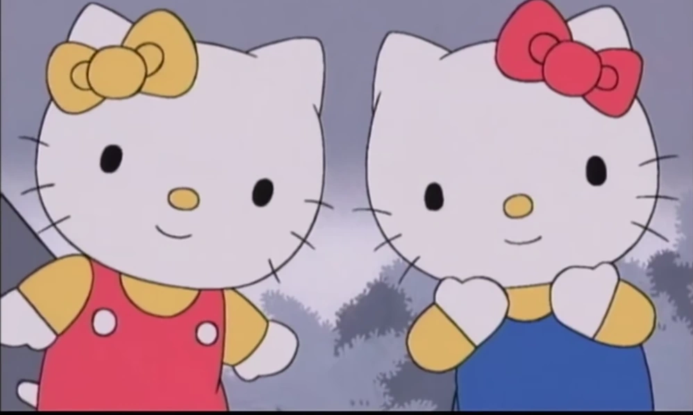
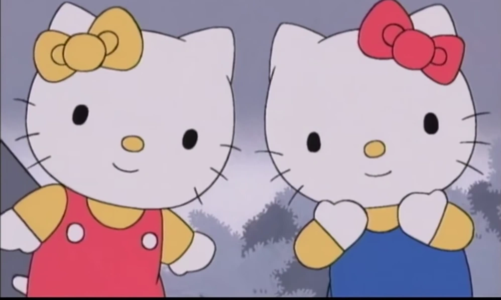

Bem-vindo ao encantador Mundo da Hello Kitty! 🌸 Aqui você vai mergulhar em um universo cheio de fofura, alegria e momentos que aquecem o coração. Prepare-se para conhecer mais sobre a gatinha mais amada do planeta, descobrir curiosidades, ver imagens super fofas e explorar conteúdos especiais criados com muito carinho.
Sinta-se à vontade para explorar cada cantinho deste site. A Hello Kitty está sempre pronta para compartilhar sorrisos, boas energias e aquele toque mágico que deixa qualquer dia mais feliz! 💗✨
A Hello Kitty nasceu em 1974 no Japão e rapidamente se tornou um dos ícones mais amados do mundo! Criada pela empresa Sanrio, ela representa gentileza, amizade e felicidade — por isso está sempre com um sorriso simples, mas cheio de carinho. 🌸💗
Apesar de muita gente pensar que ela é apenas uma gatinha, a Hello Kitty na verdade é descrita como uma garotinha cheia de sonhos, que adora fazer novos amigos e espalhar alegria por onde passa. Ela vive em Londres com seus pais e sua irmã gêmea, Mimmy — que usa um lacinho amarelo. 🎀✨
Hoje, Hello Kitty é um símbolo mundial de fofura, aparecendo em desenhos, jogos, acessórios, roupas, brinquedos e praticamente tudo que você imaginar. Seu mundo é feito de corações, amizade e boas energias — e este site foi criado para celebrar exatamente isso! 💕
Imagens fofas da Hello Kitty!

 


🌸 Curiosidades da Hello Kitty 🌸
- 🎀 Mede 5 maçãs de altura.
- 🍎 Pesa o equivalente a 3 maçãs.
- ✨ Tem uma irmã gêmea chamada Mimmy.
- 🎉 Seu aniversário é 1º de novembro.
- 🎮 Já apareceu em centenas de produtos e animações.